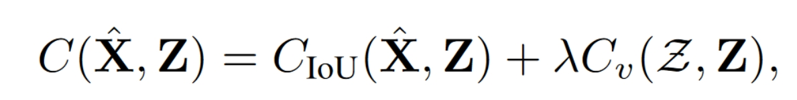

贴一下原文链接
参考：
https://blog.csdn.net/wjpwjpwjp0831/article/details/124767905
https://blog.csdn.net/weixin_48292639/article/details/124358924
Abstract
作者提出了SORT算法中的三个问题，并给出了解决方案。将自己的方法命名为OC-SORT，在保持原有SORT在线、简洁、实时的同时，提高了面对非线性运动和遮挡的鲁棒性。
Introduction
作者回顾了SORT算法的问题，表示在面对非线性运动与遮挡时，表现出跟踪鲁棒性不足，且在更新滤波后验参数时无观测值可用。
Three limitations of SORT
1）高频帧（足够短的时间间隔）放大了噪声的影响。
2）在KF更新阶段，没有观测值的时候，KF状态估计的噪声会随时间累积。
3）SORT是以目标估计为中心的，所以非常依赖卡尔曼滤波器的的估计，而检测的结果只作为辅助。但是随着目标检测算法的发展，作者认为检测的结果比卡尔曼滤波器的估计结果更加准确，所以在mot中应该更加以检测为中心。
Method
为了解决以上三个问题，作者提出了三个解决方案：
OOS（Observation-centric Online Smoothing）：减少KF带来的累积误差
OCM（Observation-centric Momentum）：在代价矩阵中加入轨迹的方向一致性，更好地实现匹配
OCR（Observation-centric Recovery）：恢复由于遮挡造成的跟丢问题
OOS（Observation-centric Online Smoothing）
该部分为了解决的问题是: 如果一个目标在untracked状态一段时间后要恢复, 如何减少误差的累积。
具体的做法是建立了一个虚拟轨迹, 轨迹的开始是目标最后一次的位置, 结束是目标再次被发现的位置。 以往的算法是直接根据当前位置预测什么的, 然而作者做的是结合当前的位置和最后一次被发现的位置做一个平滑。
最后一次观测记为z $_{t1} $，再次连接到的轨迹记为z $_{t2} $，则虚拟轨迹为：
作者运用匀速运动模型建立的虚拟轨迹，即：
$\hat{z}$ $_t$ = z $_{t1} $ + $\frac{t-t_1}{t_2-t_1}$ (z $_{t2} $-z $_{t1} $)
代入卡尔曼更新的式子：
$\hat{x}$ $_{t|t}$=$\hat{x}$ $_{t|t-1}$+K $_t$($\hat{z}$ $_t$-H $_t$ $\hat{x}$ $_{t|t-1}$)
=F $_t$ $\hat{x}$ $_{t-1|t-1}$ + K $_t$($\hat{z}$ $_t$-H $_t$ F $_t$ $\hat{x}$ $_{t-1|t-1}$ )
OCM（Observation-centric Momentum）
线性运动模型假定速度方向一致。然而，由于物体的非线性运动和状态噪声，这种假设往往不成立。在很短时间内，运动轨迹可以近似为线性，但噪声的存在阻止利用速度方向的一致性。于是作者提出了OCM——一种降低噪声的方法，并将速度一致性（动量）项添加到成本矩阵中。给定N条存在的轨迹和M个检测框，关联成本为：

OCR（Observation-centric Recovery）：恢复由于遮挡造成的跟丢问题
一旦一条轨迹在正常关联阶段之后仍然没有被跟踪，我们尝试将这条轨迹的最后一次观测与新到来的时间步上的观测进行关联。